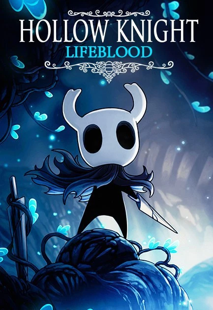

Saviavida

Sinopsis
Saviavida es el nombre de la actualización de Hollow Knight lanzada el 20 de Abril de 2018, tras un
periodo de beta pública. No forma parte de los 3 DLCs inicialmente planeados.
La actualización está enfocada a mejorar aspectos técnicos del juego como pueden ser optimización y
balanceo. También viene con contenido añadido como jefes, marcadores para el mapa, cambios en el menú
principal para poder elegir el estilo del fondo, etc.
Caballero Colmena
El Caballero colmena es un Jefe opcional de Hollow Knight introducido en la actualización (o dlc)
Saviavida. Derrotarlo te da acceso a un nuevo Amuleto.
El Caballero colmena es el caballero mas valiente y habilidoso de La Colmena, no puede volar y esta
atado a proteger a la Reina del Enjambre Vespa, a pesar de que la infección se expandió a la colmena
cuando la Reina murió, el Caballero colmena todavía la protege, esperando que algún día la Reina se
Despierte y reviva La Colmena.
se puede encontrar al Caballero colmena en la habitación mas alejada de la colmena donde esta el
gigantesco cuerpo sin vida de la Reina. embosca al Caballero cuando entra a la habitación y lucha
ferozmente contra el. al derrotarlo, el Caballero colmena se arrodillara frente al cuerpo de su Reina
antes de colapsar.
Derrotar al Caballero colmena te da acceso al Amuleto Sangrecolmena. tras tomar el amuleto, el Fantasma
de la Reina vespa aparece junto al cuerpo del Caballero colmena, Contenta ya que su caballero al fin es
libre y no este atado a la Colmena.